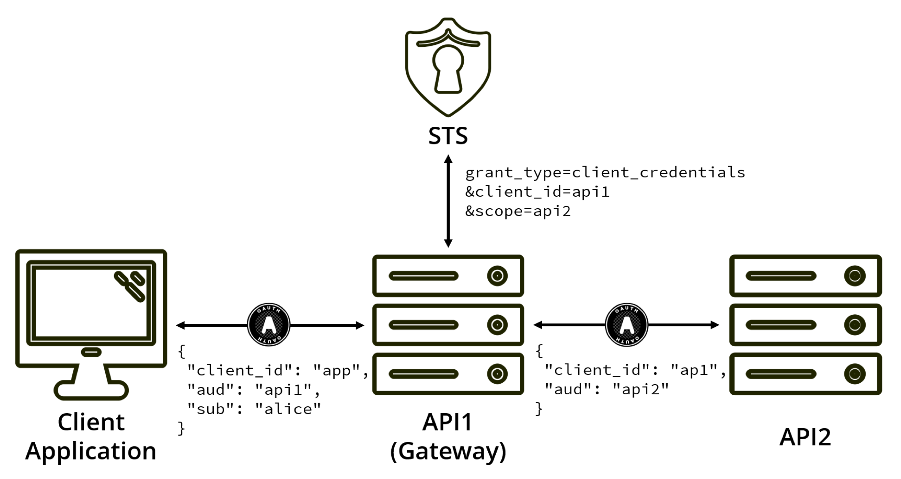

1. マイクロサービスでの認証認可¶
1.1. マイクロサービスでの認証認可は2パターン¶
ユーザ - サービス間
OAuth2.0 / OIDCをイメージモノリスだろうがあまり変わらない領域サービス - サービス間
あるサービスが別のサービスを呼ぶときどうすべきか？API1(ServiceA)がAPI2(ServiceB)を呼び出すときにIDをどう渡すのか？
1.1.2. サービス - サービス間（参考資料）¶
トークンを使い回す方式
API1(ServiceA)がClientになりすましている状態
API2(ServiceB)からは API1(ServiceA)を認識することができないaudienceやscopeの設計が複雑になってしまう。API1(ServiceA)がクライアントとなってトークンを発行する
API2(ServiceB)からはユーザを認識できなくなる
以下の役割に変わる
Client(リソースオーナー) -> API1(ServiceA)(クラアント) -> API2(ServiceB)(リソースサーバ)
トークン交換
1.1.3. DHARMA¶
DHARMAでは、サービスの集合であるドメインを定義します。このドメイン内は信頼でき、別ドメインからのアクセスは、信頼度が低いものとみなします。ドメイン内のサービスに見せるAPIエンドポイントを、Interior endpoint、ドメインの外からのアクセスを受けるエンドポイントをboundary endpointと呼び、それぞれで認証方式を変えます。システムを管理する組織が手を出せないところからのアクセス（最も外側の階層のBoundary endpoint）では、OAuth 2.0やOpenID Connectなどが良いでしょう。API gatewayを用意することになります。これは普通のマイクロサービスアーキテクチャの開発と同じです。その内側の階層のBoundary endpointでは、比較的組織内でハンドリングできるため、証明書付きの、JWTなどのトークンを使えば良いかもしれません。内部の階層は、効率重視にすればよいです。ただ、トークンを使うなど最低限のセキュリティは欲しいです。それは、軽量なリバプロを用意すればよいでしょう。 一応、auditdなどで監査ログも残しておくのが良いと思います。
2. 以下メモ¶
3. Authentication and Authorization of End User in Microservice Architecture¶
3.1. Introduction¶
認証(Authentication, AuthN)
通信の相手が誰（何）であるかを確認すること
認可(Authorization, AuthZ)
とある特定の条件に対して、リソースアクセスの権限を与えること
- 認証認可の要件
ステートレスなプロトコルでのユーザログイン状態の管理
- 一貫したログイン・ログアウト
内部でサービスが分かれていても、ログイン・ログアウト状態を一貫させたい
- アカウントの権限管理
アカウントによって、取得、操作できるリソースが異なる
3.1.1. Auth in Monolithic Application¶
通常、サーバーがセッション管理を行うことで実現する。
利点
実装がシンプル・簡単。
課題
セッションをどこかに保存する必要がある。 認証機能と他の機能の結合度が高く、スケーラビリティと柔軟性が低下 トラフィックが増大した際にノードを増やした場合、複数ノードでのセッション共有は難しい。 Cookieを使用する場合の、セキュリティ対策が必要。
3.1.2. Distributed Session Management¶
分散セッション管理はいくつかのソリューションが提案されている いずれの場合でも、設計が複雑になり保守が難しくなる。
- Sticky Session
リクエストが単一のサーバーに送信されることを保証する方法
- Session Replication
各サーバがセッションデータを保存し共有する方法
- Centirized Management
セッション管理用のサーバを構築して、すべてのサービスがこのサーバを呼び出す方式
3.1.3. Token-Based Auth¶
セッション管理とは異なる方法。 ユーザ情報の共有はトークンで完結できる。 ステートレスなので、スケーラビリティが高い ブラウザモバイルなど様々なクライアントに適用できる
3.2. Auth Challenges in Microservice¶
3.2.1. What is Microservice Architecture¶
割愛
3.2.2. Auth Service in Microservice¶
マイクロサービスでの認証・認可の実現方法で簡単なのはモノリシックを模倣する方法。 各サービスごとに認証情報を保持して、ユーザ認証機能を実装する。もしくはユーザ情報は共有。 サービスごとに認証機能を作る必要性がある。ユーザ情報を共有すると単一障害点になる。
これを改善して、認証サービスを配置するとよい。
3.2.3. What do We Want¶
セキュリティ
ステートレス
SPOFの回避
ボトルネックにならない
ログアウト機能
マイクロサービスとの統合
実装をシンプルに
3.3. Using Distribute Session¶
セッションIDがないサービスリクエストは、認証サービスへリダイレクト
認証サービスでセッションを生成してセッションストアに保存。セッションIDを割り振り、各サービスへ戻す
セッションIDをつけてサービスにアクセス
各サービスがセッションIDを使用してセッションストアにアクセスしてユーザ情報を取得する
3.5. Using JSON Web Token¶
3.6. Using JWT+API Gateway¶
4. テーマ・ゴール検討¶
4.1. 検討事項¶
認証
認可
4.1.1. そもそも認証認可って¶
- 認証(Authentication, AuthN)
通信の相手が誰（何）であるかを確認すること
- 認可(Authorization, AuthZ)
とある特定の条件に対して、リソースアクセスの権限を与えること
OAuth = 認可連携 ≠ 認可 OpenID・SAML = 認証連携 ≠ 認証
4.1.2. 認証認可で何を実現したいの？¶
4.1.3. 調査軸（ユースケース）¶
クライアントが増える → 標準化された方法（OAuth・OIDC）
|スケール|不要|要| |:--|:--|:--| |クライアント|増えない|増える（トークン使う）| |サービス数|増えない|増える| |ネットワーク|許容|ゼロトラスト|
4.1.3.1. 個人的に課題だと思っていること¶
A |P | -> A
- CL -> | I |
- CL -> APIGW -> A -> B
CL が A B の 認可を持つトークンの場合許可 CL が A の 認可を持つトークンの場合許可
4.1.3.3. やりたいこと¶
- 整理
そもそも認証認可をなぜ一元化するか。 ・ユーザ利便性（パスワード一元化・プロファイル共有・シングルサインオン・ユーザー登録作業を省略で） ・システム管理・開発の負担軽減とリスクを外部に転嫁 一方で異なる企業・組織のサービス間でID連携するためには、標準化が必要ということでOpenIDConnect等の認証連携の仕組みができた。 OIDCでは、認証と認可サーバを兼ねることができる
では、マイクロサービスアーキテクチャを採用する場合に認証認可がサービス化されるのは必然な流れ 認証認可連携としてOpenIDConnect前提で考えたときに、マイクロサービス化したシステム内部で認証認可をどう連携するかを考えたい。
- サービス呼び出しパターン
クライアント -> サービスA
b. クライアント -> サービスB -> サービスA a.のときはモノリスだろうが関係なく同じ考え方でよい b.のときにどうやって認証情報を渡す？
- トークン検証パターン
クライアント -> ○サービスA -> ○サービスB
クライアント -> ○プロキシ -> サービスA -> サービスB
クライアント -> ○プロキシ -> サービスA -> ○?プロキシ -> サービスB
- トークンパターン
IDtoken(内部サービス)
Access Token(外部サービス)
①認証パターンの整理 結局、サービス間をどこまで信頼するかで連携パターンが決まってくる。 仮説としては、だいたいの場合、内部のサービス間は
連携先サービス
(2-a) モノリスと変わらない (1-b) クライアント -> サービスBは(1-a)と一緒
- サービスB -> サービスAは
トークンをそのまま渡す場合（クライアント -> サービスAを偽造する） サービスBが新しいクライアントとなる（Token Exchangeパターン？）
・閉域網内だったら別によくない？ ・
- ②認可パターンの整理
- 認可スコープのパターン
クライアント -> サービスA -> サービスB a. スコープ：サービスA, サービスB b. 外部スコープ：サービスA, 内部スコープ：サービスA, サービスB
外部スコープ → ユースケースベース 内部スコープ → リソースベース
③DHARMAの実装 (Domain Hierarchy Access Regulation for Microservice Architecture)